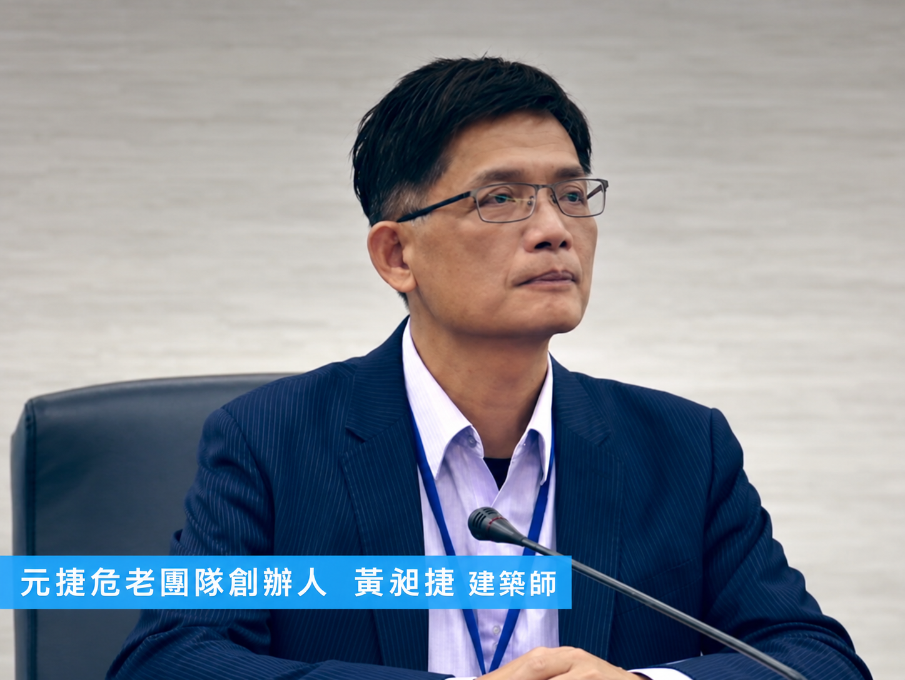

都更重建 幸福兌現
建築，儲存城市珍貴的記憶，儲藏了家的溫暖
建築藝術是連結未來的進行式。

02 / OUR PROJECTS
從城市更新，到幸福日常
專業整合・用心實現


OUR TEAM / 菁英團隊
專業團隊，值得信賴
黃昶捷建築師事務所・黃昶捷建築師
久太聯合建築師事務所・周泰良建築師
從基地整合到建築規劃，結合不同專業的經驗，讓每一份期待，逐步成為家的新風景。
認識菁英團隊 ↗03 / QUESTIONS & ANSWERS
關於都更，從理解開始。
統籌管理，專業一條龍。了解流程、權益與重建選擇。